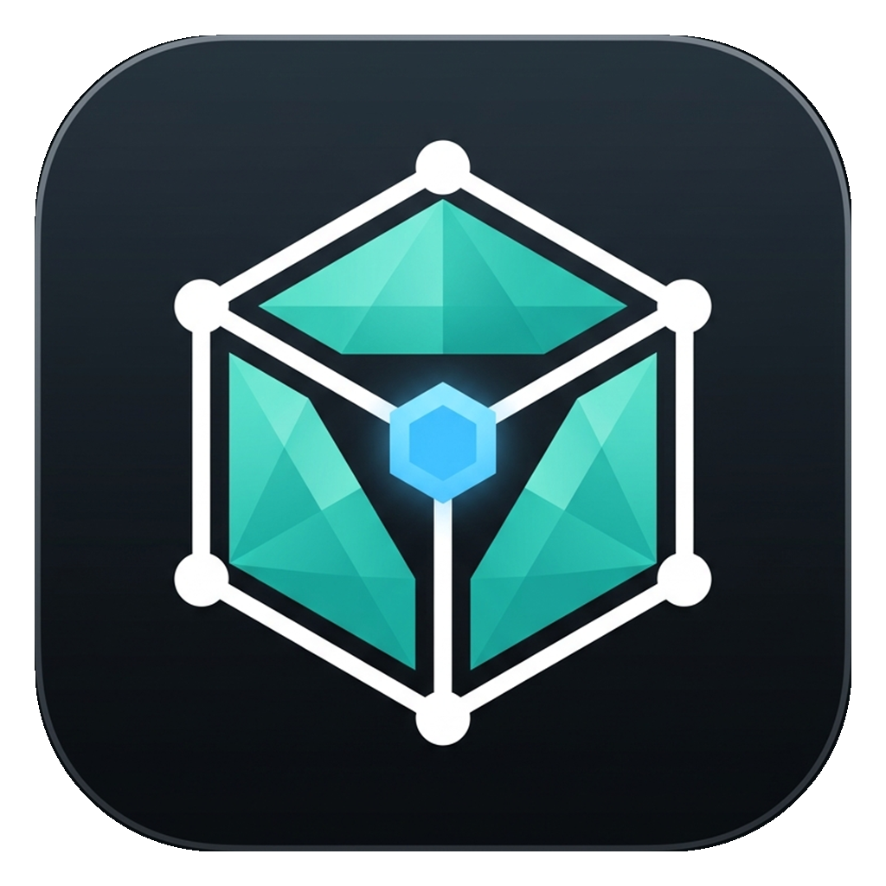
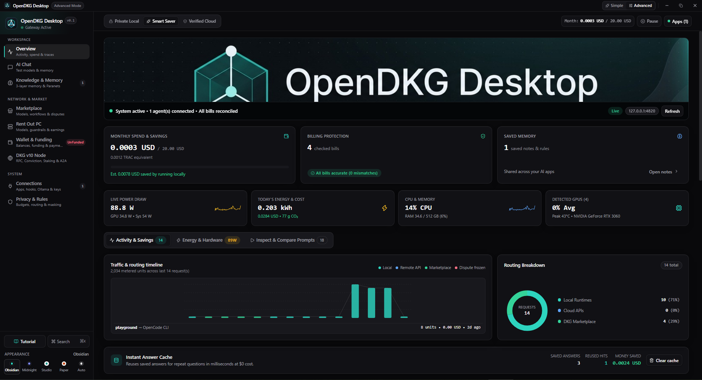
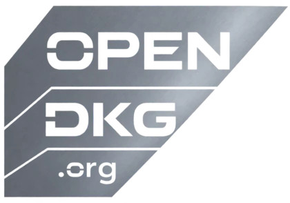

1. Connect Any AI App Once
Point Cursor, Claude Code, Codex, Windsurf, Cline, Continue, OpenCode, Ollama, LM Studio, or any OpenAI, Anthropic, or MCP client to 127.0.0.1:4820 while preserving config backups.
Connect Cursor, Claude Code, Codex, Windsurf, and local runtimes through a private 127.0.0.1:4820 hub with secret scrubbing, spend caps, shared 3-layer memory, and self-custody DKG v10 wallets on Base.


Keep sensitive prompts on your machine or route transparently across local runtimes, Web2 keys in your OS Keychain, and OriginTrail OT-RFC-27 marketplace offers.
Run Private Local strictly on Ollama, LM Studio, vLLM, or llama.cpp, or enable Smart Saver with the Instant Answer semantic cache, automatic failover, and Verified Cloud billing protection.
Separate Working Private notes from Shared Working folders indexed in embedded Oxigraph + SQLite with W3C JSON-LD and N-Triples export, and publish selected cards to Layer 3 as verifiable did:dkg:... UALs.
Built on Tauri v2 and Rust with an isolated OT-RFC-27 sidecar, OpenDKG Desktop keeps keys, budget ceilings, and secret redaction under local control.
dispute-proof.json freezing when provider claims exceed measured usage by > 3%.
Illustrative overview — live GPU/CPU power, cache hits, and spend limits are tracked locally inside OpenDKG Desktop.
Every coding assistant, local model, and OT-RFC-27 workflow runs through one deterministic pipeline on your desktop.
Auto-detect and configure coding tools and local runtimes with safe config backups.
Apply Private Local, Smart Saver, or Verified Cloud policies with secret redaction.
Index shared context in Oxigraph + SQLite and inspect 3-column DKG provenance.
Publish Knowledge Assets with UALs or rent idle Ollama compute and graphs for $TRAC.
Switch to Private Local anytime so prompts and project files never leave your machine. Your Operational Hot Wallet key stays encrypted inside your OS Keychain or Windows Credential Manager, while your external treasury address remains strictly watch-only.
Bridge everyday coding assistants and local runtimes with OriginTrail DKG v10, x402 payments, and ERC-8004 marketplace workflows — without giving up custody.

Verifiable Knowledge Assets, Base x402 settlement,
and ERC-8004 agent/compute offers.
Cursor, Claude Code, Codex, Windsurf, Cline,
Ollama, LM Studio, vLLM & llama.cpp.
Guard spend. Scrub secrets.
Sync 3-layer memory.
Working Private, Shared Working context graph,
and Verifiable UALs on DKG v10.
Independent metering, dispute proofs,
Rent AI offers, and Earn Money provider mode.
Inspect provenance across Publishers, Published DKG Assets, and Folders & Topics, pull external did:dkg:... Knowledge Assets by UAL, or withdraw local and marketplace sharing with DELETE /api/knowledge-assets/{ual} on your configured node.
Withdrawing stops local and marketplace sharing; public on-chain blockchain anchors remain immutable once committed.
Built with Tauri v2, Rust, and React 19 for Windows, macOS, and Linux. Version v0.5.0 is an active pre-1.0 milestone focused on hardening native installers, OS signing/notarization, and end-to-end security review ahead of v1.0.0.
OpenDKG Desktop is an independent open-source project affiliated with the OpenDKG initiative. Its desktop application, local gateway daemon, and core Rust libraries are licensed under GNU GPL v3.0 or later.
Visit OpenDKG on GitHub
OPEN-SOURCE ORGANIZATIONv0.5.0 is a pre-1.0 milestone in active development. Core desktop UX, self-custody DKG v10 wallet flows, 3-layer memory, and the 127.0.0.1:4820 gateway are implemented, while multi-platform installer signing and comprehensive code and security reviews are underway ahead of v1.0.0.